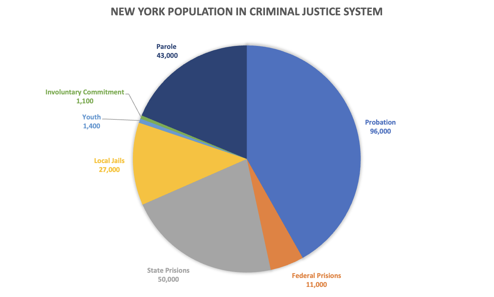

|
|
Our Programs Are Now Accessible Online
View Our Newly Released Rehabilitation Programs &
Webinars
Next Door Project aims to remove barriers due to the
impact of incarceration to work towards successful
reentry. Facing the pandemic has been a challenge but we
are working dilligently to provide support to the
community during this tough time. A majority of our
programs are now available across many virtual platforms.
Below are a list of programs offered online.
|
|
|

230,000 New York residents are behind bards or under
criminal justice supervision. Nearly 58 percent of criminal
records contain at least one error. Fixing these errors can
help open doors to employment, housing, and stability that
had previously been closed. The Next Door Project trains
older adult volunteers to help people with conviction
histories request, read, and repair their NYS Division of
Criminal Justice Services rap sheets and criminal records
maintained by consumer credit reporting agencies. Next Door
Project counselors also help individuals apply for
Certificates of Good Conduct or Certificates of Relief from
Disabilities, which provide presumptive evidence of
rehabilitation and overcome numerous statutory barriers to
employment and licensure.
|
|
NDP's Support Porgrams
Education Fundamentals
Duration: 4 Weeks
The EF program is a free, 8 session program
designed to help participants with their
application process for enrolling in
universities or vocational programs. It is
geared to individuals who want to work and have
the opportunity to achieve employment and
independence.
|
|
|
|
|
|
|
|
For Families: Mental
Health Awareness Seminar
Duration: 90 Minutes
Our seminar for families
is geared to help parents
and guardians navigate
mental health challenges
that may arise in their
household. Understanding
mental health is
particularly crucial for
child development. We'll
identify early warning
signs, coping options, and
alternatives to early
treatment.
|
|
|
|
|
|
|
Joining MentorUp: What To
Expect & Prep For
Duration: 90 Minutes
MentorUP trains volunteer
mentors to build the
academic confidence and
social skills of youth who
are in Alternatives to
Detention (ATD) programs.
MentorUP’s highly
motivated volunteers offer
site-based mentoring with
partnering agencies to
help young people break
the cycle of recidivism.
|
|
|
|
|
|
|
|
2090 Adam Clayton Powell Jr Blvd 12th Floor
New York, NY 10027
Phone: (646) 503-5600
E-Mail: blueprint@communityaccess.org
|
|
|
|
|